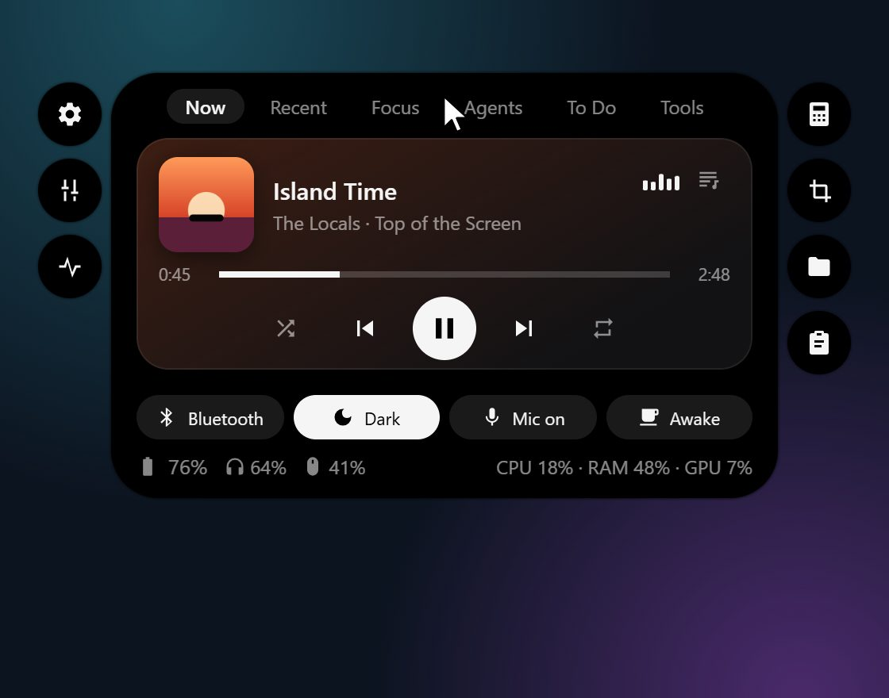
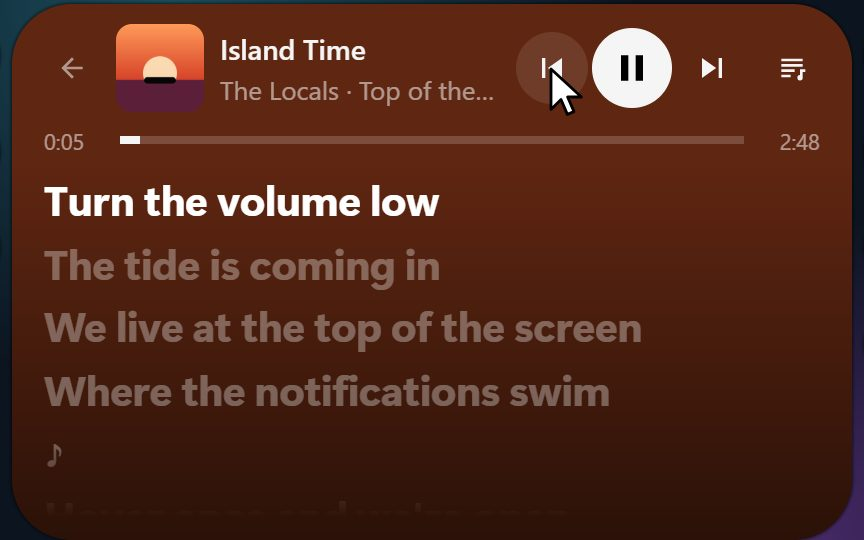
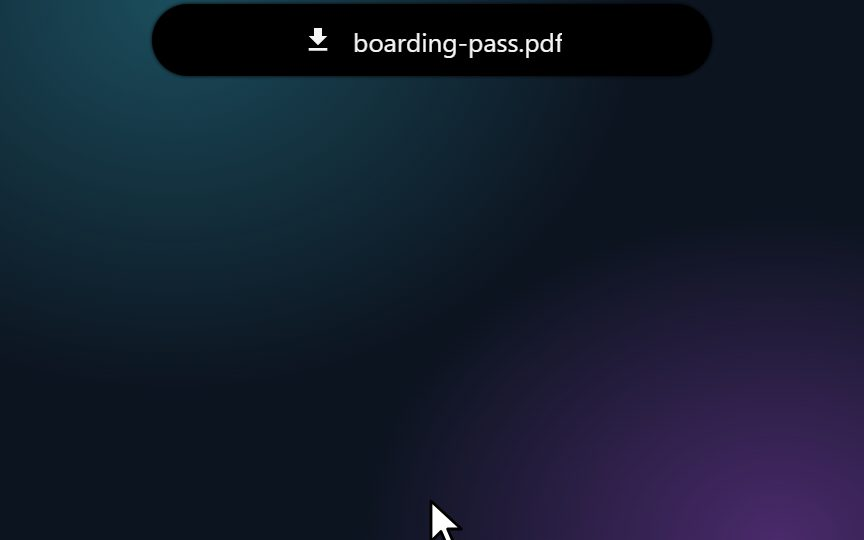
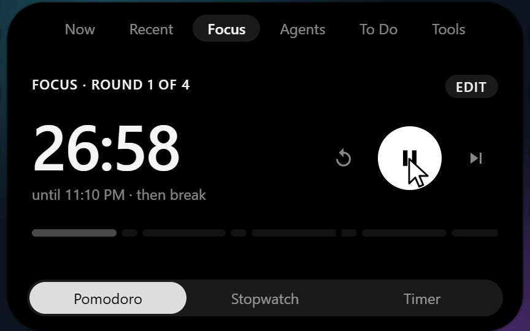
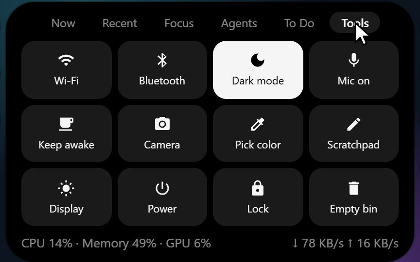
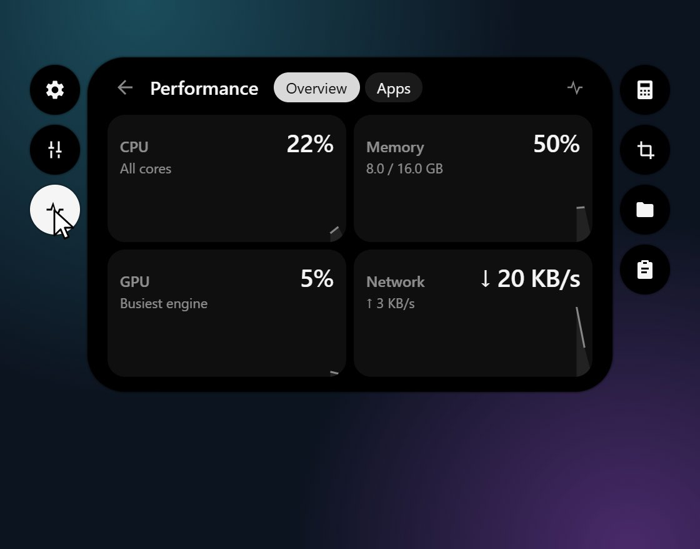

Now playing
Spotify, your browser, any player Windows knows. The cover, a live equalizer and every control.
Pulo is a free Dynamic Island for Windows. Hover the top of your screen to peek, click to open.
Try it: hover the island to peek, click to open.Try it: tap the island to open it.
Hover a card to watch it.Swipe for more, tap a card to replay it. Each clip is the real island.

Spotify, your browser, any player Windows knows. The cover, a live equalizer and every control.

Lines in time with the song. Click one to jump there.

Downloads, meetings, low batteries, your camera or mic in use, and Claude Code or Codex finishing a task.

Pomodoro rounds, a stopwatch, and a timer up to 3 hours. Change the lengths right there.

Wi-Fi, Bluetooth, dark mode, mic mute, brightness and power.

Performance, volume mixer, clipboard and calculator, inside the island.
Something else? Ask on GitHub.
Any app in the Windows media controls: Spotify, Apple Music, YouTube and other sites in Chrome or Edge, and most players.
No. It waits for Windows to report changes instead of checking constantly, and nothing animates while it rests.
Choose More info, then Run anyway. Or get Pulo from the Microsoft Store, which installs without the warning.
Turn on Click through the island in Settings. Clicks then reach whatever is underneath; hold Ctrl to use the island. Or turn on Tuck away when idle, and it slides into the edge until you point at it.
Only the song's title, artist and length to lrclib.net for lyrics (off until you turn it on), your calendar link if you add one, and a check for updates.
For Windows 10 (version 2004 or newer) and 11. MIT licensed, built in the open.